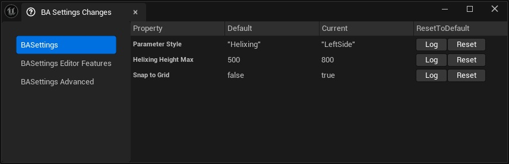

Editor features
Copy paste pin value
- Works the same as copy pasting values in the details panel
- Hold
SHIFTand pressRMBto copy to clipboard andLMBto paste - Hotkey
Copy Pin Value Chord+Paste Pin Value Chordin editor preferences
Generate getter and setter
- Context menu options to generate getter and setter functions
- Setting
Merge Generate Getter and Setter Buttonto merge into a single action - Renaming a variable will auto-rename the getter and setter

Auto linking for new nodes
When a new node is created through the node creation menu, hold CTRL to insert the node between existing wires. The engine already auto inserts executable nodes by default, so this is mostly for pure nodes.
Hotkey can be changed here
Editor Pref > Blueprint Assist Editor Features > Insert New Node Key Chord
Additionally holding the key down while dragging from an output parameter will auto connect the execution wire if it exists.
Settings Change Window
- Can be found under Tools > BA Settings Changes
- Displays any changed settings in the plugin and allows to reset to default

Set variable defaults
- Set default properties to be applied to newly created variables

Here we would like to set all new variables to default to private
Set function defaults
- Set default properties to be applied to newly created blueprint functions
Auto add parent node
- Disable this behavior by disabling
Auto Add Parent Node

Auto enable Instance Editable
- Enable the variable property
Instance Editablewhen you tick Expose on Spawn

Invisible knot nodes
- Disabled by default, enable with setting
Enable Invisible Knot Nodes

Play live compile sound
- Play sound upon successful live compile
- Disabled by default, enable with setting
Play Live Compile Sound
Group movement
- While dragging nodes on a graph, hold any
Group Movement Chordand it will move all linked nodes - Default key is
Spacebar, search forGroup Movement ChordsinEditor Preferences

Folder bookmarks
Keybindings to activate a folder in the content browser. While the content browser is open:
- Press
CTRL + SHIFT + {0-9}to set the bookmark - Press
CTRL + {0-9}to activate the bookmark - See setting
Folder bookmarksto change keybindings for bookmarks
Node Groups
Group nodes so they are locked together and moving one node will move the entire group
- Press
ALT + Gto group selected nodes - Press
ALT + CTRL + Gto ungroup selected nodes nodes - Holding down
ANY KEYwill allow you to bypass the lock and move nodes individually - See settings in
Editor Features | Node Groupfor different methods of visually displaying the node groups (such as highlighting)

Auto Custom Event Replication Flags and Title
When renaming a CustomEvent title it will update the custom event's Replication based on the node title prefix

When changing a CustomEvent Replication it will prefix the custom event's title

Notable Settings
Clear replication Flags when Renaming with No Prefix(disabled by default)- If you don't add a prefix to the title, the rep flag will be set to
Not Replicated
- If you don't add a prefix to the title, the rep flag will be set to
- Settings to change the Prefix for Multicast, Server and Client (default to
Server_etc)
Generate Create Event
- Generate a create event node from a delegate pin by right clicking the pin to open the context menu